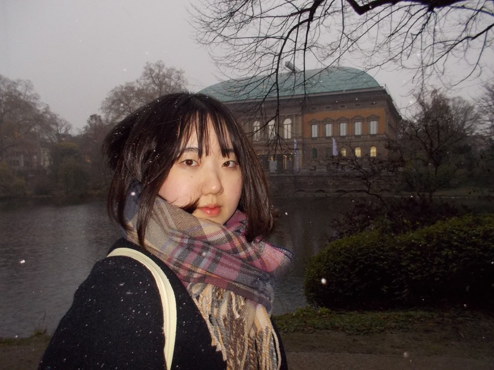

Yina Kim
I am an undergraduate student in Mechanical System Engineering at Sookmyung Women's University.
My research interests lie in physical human-robot interaction and sensor-based robot perception. I am particularly interested in how robots can interpret physical contact as an interaction signal and respond safely in real-world environments.
nen10231@sookmyung.ac.kr | GitHub | LinkedIn | CV | Seoul, Korea
Projects

Research Experience
Undergraduate Research Intern, SPRINT Lab
Timeline
Enrolled at Sookmyung Women's University.
Joined RIME Robotics Society.
Started undergraduate research internship at SPRINT Lab.
Selected for an exchange student program.
Returned to SPRINT Lab as an undergraduate research intern.
Appointed Vice President of RIME Robotics Society.